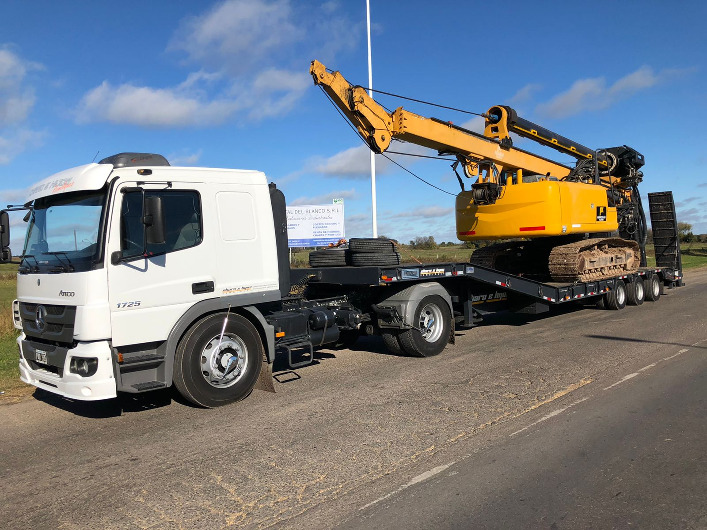

QUIENES SOMOS
SOMOS UNA EMPRESA FAMILIAR QUE TIENE SU ORIGEN EN EL AÑO 1980 CUANDO GABRIEL ABRE UN TALLER ESPECIALIZADO EN LA MECANICA PESADA, QUE INCLUIA UN SERVICIO DE REMOLQUES EXCLUSIVO PARA SUS CLIENTES. EN EL AÑO 2004 EN CONJUNTO CON SUS HIJOS, DECIDEN POTENCIAR ESTE SERVICIO ABRIENDOSE AL MERCADO EMPRESARIAL.
VISION
La VISIÓN de Gabriel Remolques radica en seguir su camino de transformación en materia de tecnología vehicular enfocada al traslado de vehículos, maquinarias y equipos buscando resultar día a día una solución estrictamente eficaz para quién decide ser cliente.

MISION
La MISIÓN de la empresa es la atención a sus clientes, brindando una solución definitiva al inconveniente presentado.